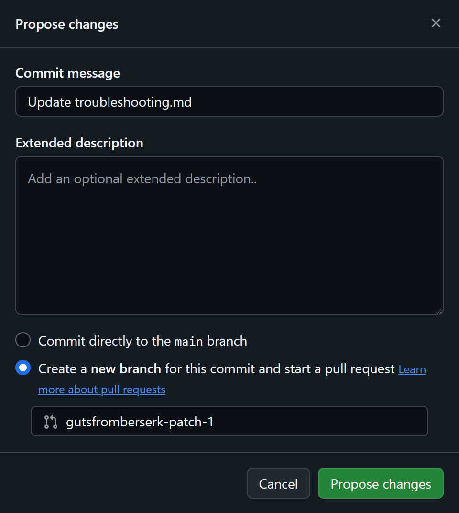

Contributing to the docs
Thanks for helping improve our docs! We pledge to make participation in our community a harassment-free experience for everyone. For more information, see our Code of Conduct.
Tip
To learn more about the site's components and how to build the docs locally, see the repository's README.md.
Making a contribution
Prerequisites
Before you can contribute, you'll need a GitHub account. If you don't have one, create one now.
Step 1: Make a change
To make a change, you can use your web browser or the terminal. If you're new to Git or GitHub, we recommend using your browser.
Step 1.1: Find the page on GitHub
In the Light Phone Docs repository, select docs.

Each page's URL on Light Phone Docs reflects the repository's directory structure. Use your page's URL to find its corresponding Markdown file in the docs directory. For example, the Markdown file for internetisaiah.github.io/light-phone-docs/troubleshooting can be found in docs > troubleshooting.md.
Step 1.2: Edit the file
Select Edit this file, then make your changes using Markdown formatting.
Note
If you're asked to fork the repository first, you can keep the default settings, then select Create Fork.
When you're finished, select Commit changes.

Step 1.3: Propose your changes
In the next window, choose Create a new branch for this commit and start a pull request. If you choose the first option, your changes will not be sent to the correct location, so double-check that the correct option is selected before continuing.
After confirming, select Propose changes.

In the next window, select compare across forks. From the base repository dropdown, choose internetisaiah/light-phone-docs, then select Draft pull request. You'll fill out the draft in the next step.

Step 1.1: Set up your local environment
Note
If you've already forked and cloned the repository, continue to the next step.
Go to the Light Phone Docs repository and select Fork > Create Fork.

In your terminal, clone your forked repository.
Replace YOUR_GITHUB_USERNAME with the name of your GitHub account. Your command should be similar to the following:
To ensure that your changes are pushed to the real repository instead of your fork, you'll need to set up a new remote in Git.
To verify that your new remote was added successfully, you can list your remotes using the remote command's -v option.
$ git remote -v
origin git@github.com:gutsfromberserk/light-phone-docs.git (fetch)
origin git@github.com:gutsfromberserk/light-phone-docs.git (push)
target git@github.com:internetisaiah/light-phone-docs.git (fetch)
target git@github.com:internetisaiah/light-phone-docs.git (push)
Step 1.2: Get the latest changes
In the repository, the develop branch reflects the most up-to-date version of Light Phone Docs. Check out the develop branch and pull the latest updates into your local environment.
Step 1.3: Create a new branch
When making changes to the docs, you'll always create a new branch. Use git branch along with the -b flag to create a new branch.
Replace BRANCH_NAME with a short, non-space-separated description of your changes. Your command should be similar to the following:
$ git checkout -b fixing-typo-in-troubleshooting
Switched to a new branch 'fixing-typo-in-troubleshooting'
Step 1.4: Edit the file
In your text editor, open the document you want to change, then make your changes using Markdown formatting.
When you're finished, save your changes, then open your terminal and check your Git status. The output is similar to the following:
$ git status
On branch fixing-typo-in-troubleshooting
Changes not staged for commit:
(use "git add <file>..." to update what will be committed)
(use "git restore <file>..." to discard changes in working directory)
modified: docs/_home/metadata.md
no changes added to commit (use "git add" and/or "git commit -a")
Step 1.5: Push your changes
Use git add to tell Git which changes you want to stage for your commit. The following command shows two options:
- Left side of pipe: Add all of your changed files using
--all. - Right side of pipe: Add an individual file by replacing
PATH_TO_FILEwith the relative path to your changed file.
Use git commit with the -m flag to create your commit along with a short description (or message).
Replace COMMIT_MESSAGE with a short sentence describing your changes. Your command should be similar to the following:
$ git commit -m "Fixing a typo in the troubleshooting doc"
[fixing-typo-in-troubleshooting 8b05e34] Fixing a typo in the troubleshooting doc.
1 file changed, 1 insertion(+), 1 deletion(-)
Finally, push your changes to the Light Phone Docs.
Replace BRANCH_NAME with the name of your branch. The output is similar to the following:
$ git push -u target fixing-typo-in-troubleshooting
Enumerating objects: 14, done.
...
To github.com:internetisaiah/light-phone-docs.git
* [new branch] fixing-typo-in-troubleshooting -> fixing-typo-in-troubleshooting
branch 'fixing-typo-in-troubleshooting' set up to track 'origin/fixing-typo-in-troubleshooting'.
Step 1.6: Create your pull request
Go back to the repository homepage and select Compare & pull request. You'll fill out the draft in the next step.
Step 2: Fill out your pull request
In the PR description, you'll see Markdown comments similar to the following:
These comments will guide you through your PR description. When you're finished, select the pull request dropdown, then select Draft pull request.
Finally, check Allow edits and access to secrets from maintainers. This will let us make style or formatting changes to your content during our review later.
Step 3: Request a review
If you're ready for your work to be reviewed, select Ready for review.
In the Reviewers field, type internetisaiah. Select the team name and press Esc or click out of the dropdown to confirm your selection.

If we request additional changes after our review, you'll be notified per your GitHub notification settings. Otherwise, we'll approve and merge your changes, so they go out with the next deployment.